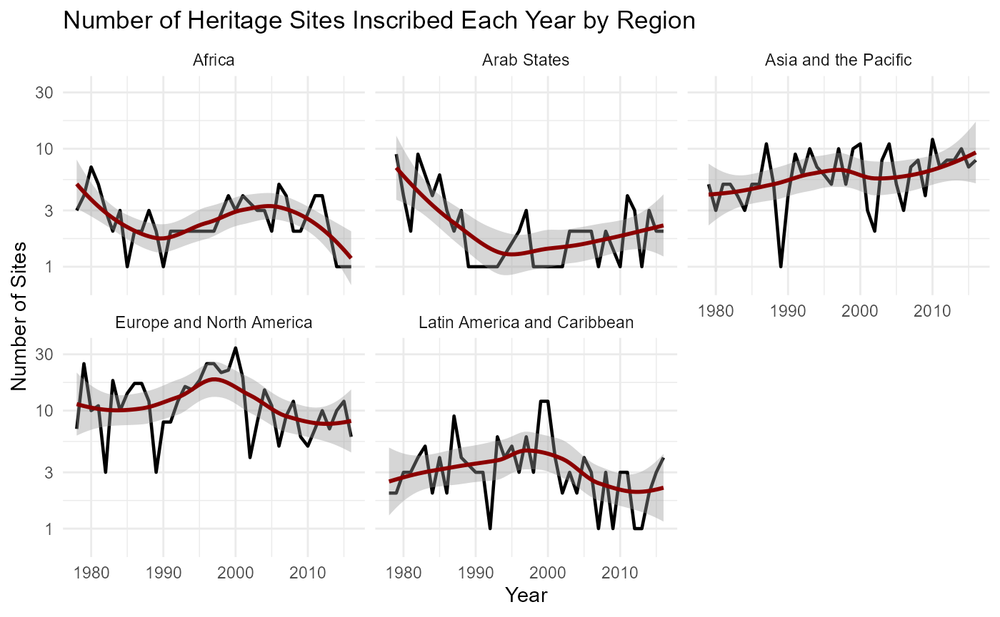
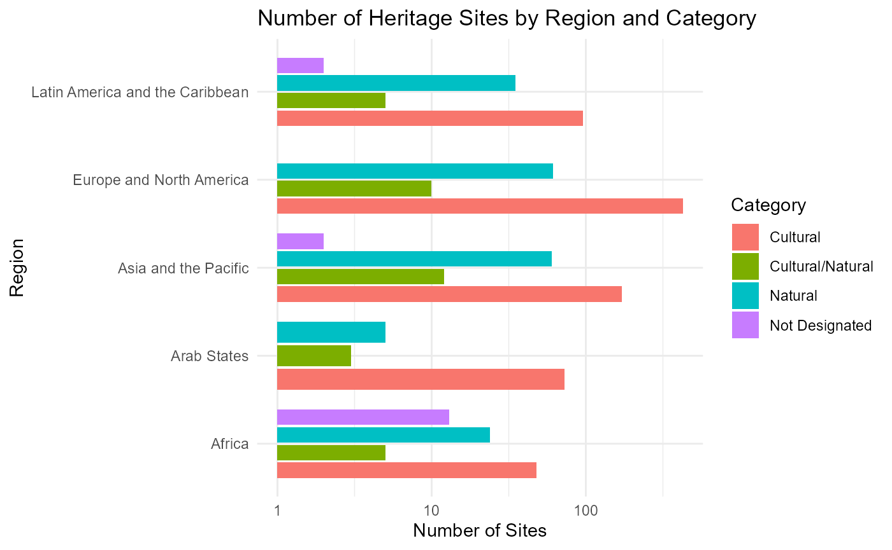

Exploring UNESCO World Heritage Site
heritage_analysis.Rmd
# Load your dataset
data(heritage_clean)
# Display the structure of the dataset to understand its components
str(heritage_clean)
#> sf [1,052 × 11] (S3: sf/tbl_df/tbl/data.frame)
#> $ NAME : chr [1:1052] "Minaret and Archaeological Remains of Jam" "Cultural Landscape and Archaeological Remains of the Bamiyan Valley" "Historic Centres of Berat and Gjirokastra" "Butrint" ...
#> $ LONGITUDE : num [1:1052] 64.52 67.83 20.13 20.03 2.38 ...
#> $ LATITUDE : num [1:1052] 34.4 34.8 40.1 39.8 36.5 ...
#> $ COUNTRY : chr [1:1052] "Afghanistan" "Afghanistan" "Albania" "Albania" ...
#> $ REGION : chr [1:1052] "Asia and the Pacific" "Asia and the Pacific" "Europe and North America" "Europe and North America" ...
#> $ DATEINSCRI : num [1:1052] 2002 2003 2005 1992 1982 ...
#> $ DANGER : chr [1:1052] "2002" "2003" NA NA ...
#> $ AREAHA : num [1:1052] 70 158.9 58.9 NA 52.2 ...
#> $ CATFIN : chr [1:1052] "CD" "CD" "C" "C" ...
#> $ geometry :sfc_POINT of length 1052; first list element: 'XY' num [1:2] 64.5 34.4
#> $ CATFIN_FULL: chr [1:1052] "Cultural" "Cultural" "Cultural" "Cultural" ...
#> - attr(*, "sf_column")= chr "geometry"
#> - attr(*, "agr")= Factor w/ 3 levels "constant","aggregate",..: NA NA NA NA NA NA NA NA NA NA
#> ..- attr(*, "names")= chr [1:10] "NAME" "LONGITUDE" "LATITUDE" "COUNTRY" ...
# Assuming you have a function to get trends data
trends_data <- plot_trends(heritage_clean)
# Plotting function for regional distribution
plot_region_category(heritage_clean)
# Function to get top countries data
top_countries_data <- heritage::table_top_countries(heritage_clean)
knitr::kable(top_countries_data, caption = "Top 10 Countries with Most UNESCO World Heritage Sites")| COUNTRY | Total_Sites |
|---|---|
| China | 49 |
| Italy | 47 |
| Spain | 42 |
| France | 38 |
| Germany | 35 |
| India | 34 |
| Mexico | 34 |
| United Kingdom of Great Britain and Northern Ireland | 29 |
| Russian Federation | 23 |
| Iran (Islamic Republic of) | 21 |